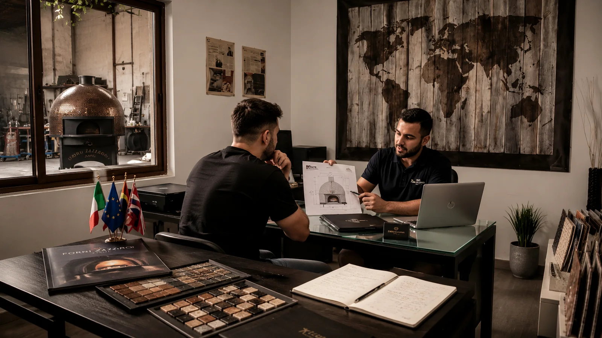
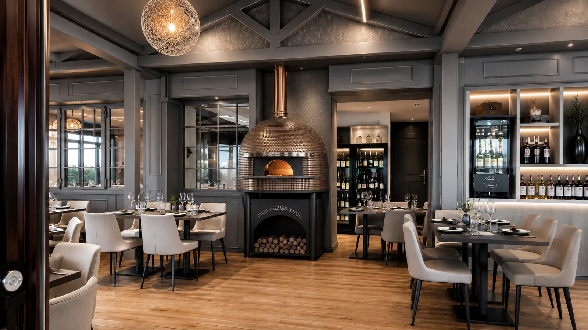
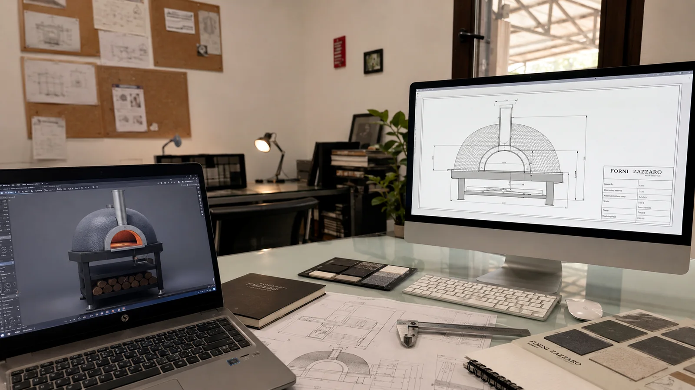
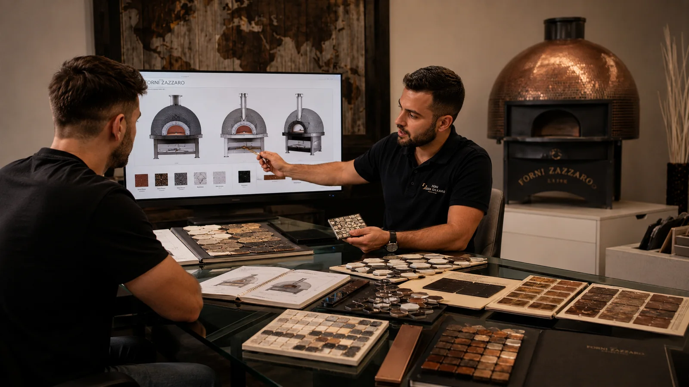
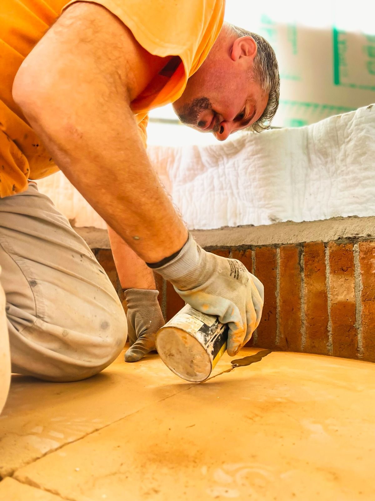
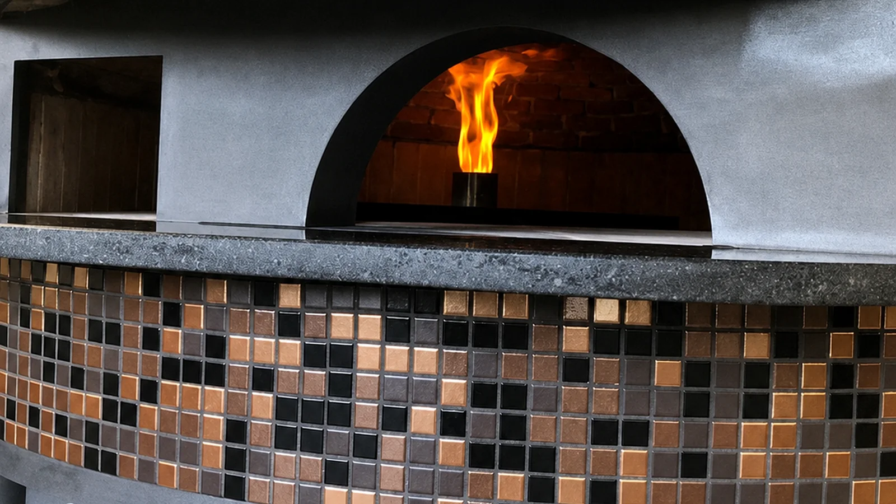
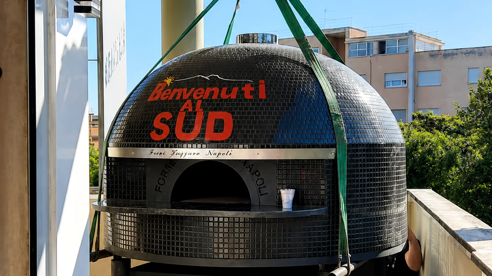
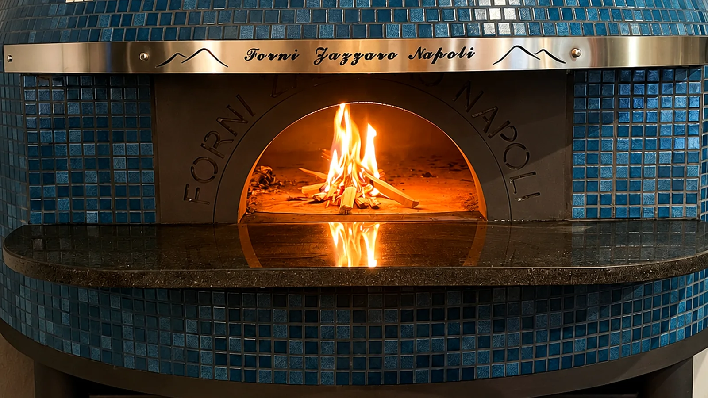
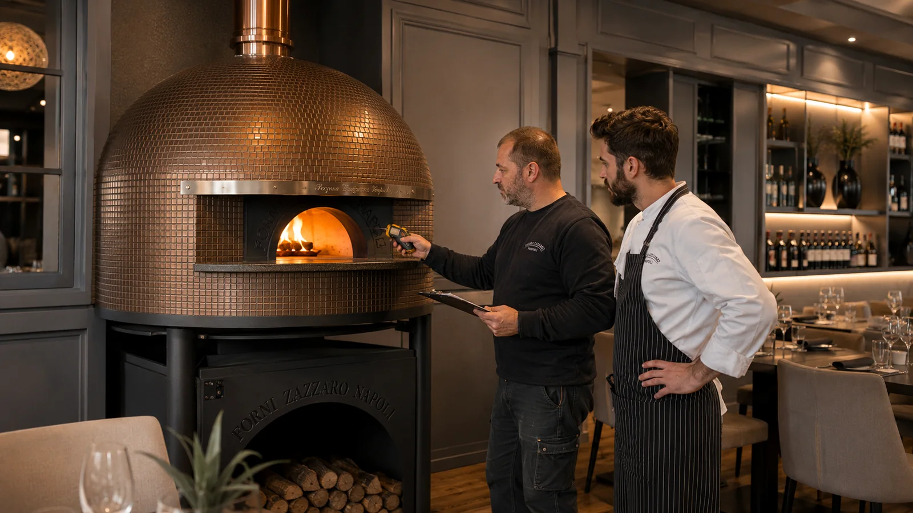

Un unico partner. Dal progetto alla prima pizza.
Ogni forno nasce da un percorso preciso, costruito insieme al cliente. Una sequenza di competenze tecniche, lavorazioni artigianali e assistenza che accompagna il progetto dall’idea iniziale fino alla piena operatività.

Tutto comincia dall’ascolto.
Ci racconti il tuo progetto, il tipo di pizzeria, i volumi di lavoro previsti e gli obiettivi del locale. Da questo confronto nasce la prima visione del forno.
- Consulenza diretta
- Valutazione iniziale del progetto
- Confronto su necessità e priorità

Studiamo il tuo spazio e il tuo modo di lavorare.
Valutiamo gli spazi disponibili, il layout della cucina, il numero di pizze da produrre, il tipo di alimentazione e ogni vincolo tecnico del locale.
- Analisi degli ingombri
- Valutazione della capacità produttiva
- Scelta tra legna, gas, combinato o elettrico

Ogni dettaglio prende forma prima della costruzione.
Il forno viene progettato nelle dimensioni, nella configurazione e nelle caratteristiche tecniche più adatte al locale e ai ritmi di produzione richiesti.
- Disegno tecnico dedicato
- Definizione di misure e configurazione
- Studio dell’integrazione nel locale

Il forno diventa parte dell’identità del locale.
Colori, mosaici, finiture e dettagli estetici vengono scelti per creare un forno riconoscibile, coerente con il design della pizzeria e con il valore del tuo brand.
- Scelta di mosaici e rivestimenti
- Colori e finiture personalizzate
- Scritte, loghi e dettagli dedicati

Mani esperte trasformano il progetto in materia.
Ogni forno viene realizzato artigianalmente nella nostra officina, attraverso lavorazioni precise e materiali scelti per garantire solidità, prestazioni e durata.
- Lavorazione artigianale
- Materiali professionali e refrattari
- Controllo continuo delle lavorazioni

Prima della partenza, verifichiamo ogni funzione.
Il forno viene acceso, controllato e testato per verificare temperature, distribuzione del calore, funzionamento e affidabilità complessiva.
- Test di accensione
- Controllo delle temperature
- Verifica del funzionamento generale

Organizziamo il viaggio fino al tuo locale.
Il forno viene protetto e preparato con cura per il trasporto. Coordiniamo la movimentazione e le operazioni necessarie affinché arrivi nel luogo previsto in sicurezza.
- Imballaggio professionale
- Organizzazione del trasporto
- Supporto alla movimentazione e installazione

Il momento in cui il progetto prende vita.
Durante la prima accensione verifichiamo il corretto avviamento e forniamo le indicazioni necessarie per utilizzare il forno, gestire il calore e ottenere le migliori prestazioni.
- Avviamento controllato
- Indicazioni operative
- Supporto nell’utilizzo iniziale

Il nostro lavoro continua dopo la consegna.
Restiamo disponibili per supporto tecnico, controlli, indicazioni d’uso e necessità successive. Il cliente non acquista soltanto un forno, ma un rapporto diretto con chi lo ha progettato e costruito.
- Supporto tecnico diretto
- Controlli e indicazioni operative
- Assistenza nel tempo
Raccontaci la pizzeria che vuoi costruire.
Studieremo insieme il forno più adatto al tuo locale, alle tue esigenze e al tuo modo di lavorare.
Richiedi una consulenza